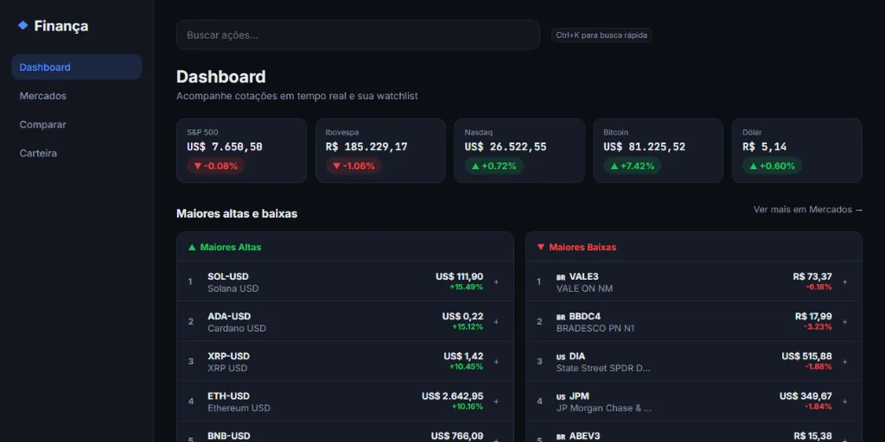
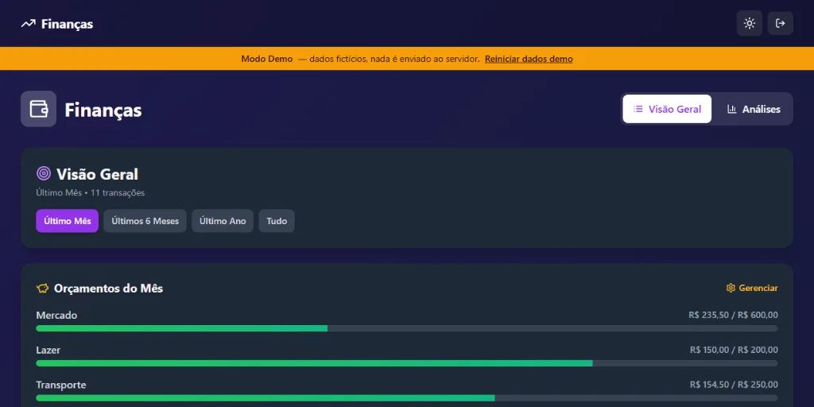

Recifle
Conecta centros de reciclagem diretamente com fornecedores e a população, permitindo negociações e fechamento de negócios de forma direta.
// bem-vindo(a) ao sistema
arturtmelo1@gmail.com · linkedin.com/in/arturtmelo · github.com/arturtmelo · arturtmelo.dev
Desenvolvedor full-stack com foco em C# / .NET, experiência em cloud (Azure), APIs escaláveis e pipelines de CI/CD. Antes de programar, estudei Economia — hoje ainda calculo o "ROI" de cada refactor.
01 // sobre
➜ Sou Artur Tavares de Melo, desenvolvedor full-stack com foco em C#/.NET.
➜ Na Intelectah (2023–2024), construí APIs escaláveis em .NET integradas a serviços Azure, e mantive pipelines de CI/CD com testes de carga, unitários, de integração e E2E.
➜ Antes disso, na Hurtz Importação (2021–2022), desenvolvi aplicações internas em Java e React e automatizei relatórios com Python.
➜ Trajetória pouco convencional: comecei estudando Economia na UFPE (2020–2022), migrei pra Gestão de TI na Cesar School (2023–2025) — hoje transito entre código, nuvem e visão de negócio.
➜ Fora do trabalho: construí o Recifle e o Rover (veja em #projetos), sou tutor voluntário de lógica e estrutura de dados, e falo inglês fluente (intercâmbio nos EUA) e espanhol.
➜ |
Gestão de TI — Cesar School (2023–2025)
Economia — UFPE (2020–2022)
Full-stack: C#/.NET, React/Vue/Angular, Cloud (Azure)
Inglês fluente · Espanhol
feat: você está lendo o commit mais recente
feat: Recifle e Rover — dois projetos próprios, do zero
chore: encerra ciclo na Intelectah, foca em projetos próprios
feat: Dev Full-Stack na Intelectah — C#/.NET, Azure, pipelines de CI/CD
refactor!: BREAKING CHANGE — migra de Economia pra Ciência da Computação (Gestão de TI, Cesar School)
feat: primeiro contato com código de verdade — automações em Python na Hurtz Importação
init: começa a graduação em Economia (UFPE)
02 // stack
passe o mouse (ou o dedo) pelos nós pra destacar as conexões.
03 // projetos
Conecta centros de reciclagem diretamente com fornecedores e a população, permitindo negociações e fechamento de negócios de forma direta.
Ferramenta de web scraping que extrai automaticamente dados essenciais da web e exporta os resultados de forma estruturada.

Painel de mercado financeiro em tempo real — cotações de ações (BR/EUA), ETFs e criptomoedas, carteira com histórico de compra/venda e lucro/prejuízo, alertas de preço e comparação de ativos em gráfico.

Aplicativo web para gerenciar transações, orçamentos e visão geral das finanças, com dashboard interativo, gráficos analíticos e modo de demonstração para visitantes testarem sem precisar criar conta.
em construção...
04 // interativo
digite help e explore.
Digite help para ver os comandos disponíveis.
05 // playground
se quiser fazer uma pausa, fique à vontade: 3 jogos simples, feitos só com HTML, CSS e JavaScript puro — sem framework nenhum.
use as setas do teclado (ou WASD) pra jogar.
arraste o dedo na tela ou use os botões abaixo pra jogar.
digite o trecho de código exatamente como aparece — o mais rápido e certo possível.
comece na casa verde e arraste por todas as casas, sem atravessar as paredes, até fechar a palavra na casa tracejada.
início fim parede
06 // contato
Aberto a oportunidades, projetos, colaborações ou só trocar uma ideia sobre tecnologia.